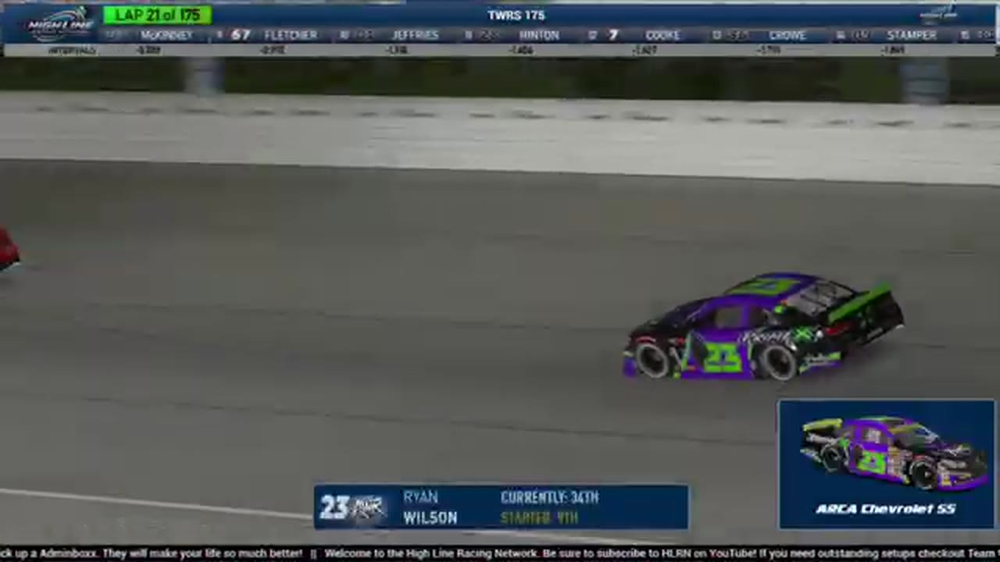

Evan Perry
Team assignment not stated in the structured owner record.
A REVIEWED STORY FILE
- Official files
- 18
- Central editions
- 2
- Exact tape cues
- 13
- Accepted podiums
- 0
Evan Perry appears in 18 official HLRN broadcast files across Seasons 1, 2. The current result ledger does not assign this driver a supported top-three finish. A consistently stated team affiliation remains open for owner review. The currently indexed source window runs from November 17, 2025 through July 20, 2026.
Highline Central supplies 2 bounded race editions, while the primary chapter index supplies 13 direct jump points. Talladega is the most frequent named track in the current appearance ledger. The densest direct-tape categories are incident (4 cues) and strategy (3 cues). Those counts describe where the name is easiest to find; they are not fault, pace, or performance grades. A source-attributed car frame is published with its original video and timestamp. That is the current discovery map for Evan Perry.
Official name signals are used for discovery only. They do not become starts, points, incident counts, or an ability grade. This page is deliberately detailed about the tape and restrained about the unavailable competition record. Separately, 10 Highline Live files sit on the bonus shelf and never enter the official season ledger. The displayed name is labeled transcript normalized; that status remains visible so an owner roster can strengthen or correct the identity without rewriting the evidence trail. Those boundaries define Evan Perry's public HLRN file.
10 featured race-tape cues
These are discovery routes into complete HLRN broadcasts, not performance grades or inferred results.
- S1 / R5 · FINISH
Juan Escamilla reaches the Watkins Glen checkered
S1 / R5 at 1:39:00: The primary tape calls Juan Escamilla at the Watkins Glen checkered and carries the first replay of the finish. The result label is tied to the accepted ledger.
Watkins Glen - S1 / R15 · STAGE
Stage 2 winner call at iRacing Superspeedway
S1 / R15 at 1:27:49: The broadcast enters a stage-scoring discussion at iRacing Superspeedway with Nick Bowman, Trevor Haley, Brandon Showers, and Evan Perry in the scoring call. The clip preserves the on-air timing or points call without promoting it into a complete stage result; the accepted feature result ledger remains separate.
iRacing Superspeedway - S1 / R8 · STAGE
Stage 2 countdown at Talladega
S1 / R8 at 1:23:11: The broadcast enters a stage-scoring discussion at Talladega with Trevor Haley, Zack Cato, and Evan Perry in the scoring call. The clip preserves the on-air timing or points call without promoting it into a complete stage result; the accepted feature result ledger remains separate.
Talladega - S2 / R1 · BATTLE
Trevor Haley and Brian Hennings enter Daytona's three-wide late pack
S2 / R1 at 2:25:43: The Daytona pack compresses three wide while Trevor Haley, Brian Hennings, Shane Hatfield, and Evan Perry are named on the call. The chapter keeps the live battle intact and makes no finishing-order claim.
Daytona - S1 / R8 · BATTLE
Talladega stacks six rows deep in the opening draft
Michael Wiley moves high as the Gen 6 field forms three-wide lanes six to seven rows deep. Juan Escamilla controls the front while Evan Perry appears in the middle of the pack.
Talladega - S2 / R1 · RESTART
Cody Neagles and Evan Perry bring Daytona back to green
S2 / R1 at 2:24:45: Cody Neagles and Evan Perry are in the booth's front-pack call as Daytona returns to green. The cut keeps the restart launch and the first lap of lane development together.
Daytona - S1 / R8 · STRATEGY
Talladega's pit cycle promotes Carson Rowland and Justin Lee Pearson
HLRN returns live as the field exits pit road and projects Carson Rowland ahead of Justin Lee Pearson, Evan Perry, and Billy Rickett. The window is a running-order reset produced by the pit cycle, not Pearson entering pit road.
Talladega - S1 / R2 · STRATEGY
Bryce Hinton enters the Homestead-Miami pit-strategy swing
S1 / R2 at 59:19: Pit timing starts to reorganize the field, with Bryce Hinton, Evan Perry, Trevor Haley, and Nick Bowman named in the sequence. The clip is a strategy receipt from the primary Homestead-Miami broadcast, not a reconstructed scoring sheet.
Homestead-Miami - S1 / R1 · STRATEGY
Nick Bowman enters the Daytona pit-strategy swing
S1 / R1 at 40:11: Pit timing starts to reorganize the field, with Nick Bowman, Bryce Hinton, and Evan Perry named in the sequence. The clip is a strategy receipt from the primary Daytona broadcast, not a reconstructed scoring sheet.
Daytona - S1 / R16 · INCIDENT
Evan Perry is caught in the Talladega caution replay
S1 / R16 at 1:47:51: The caution sequence centers the replay call on Evan Perry. This is a source-bounded incident window; it preserves what the booth reviews without assigning unsupported fault.
Talladega
Recent editions connected to Evan Perry
Moreno Owns the Chicagoland Closing Run
Nick Bowman led the most laps, but Ethan Moreno pulled clear of Matt Brown and Kyle Cameron when the final lap arrived.
S1 / R8Escamilla Wins Through the Wreck
A last-lap crash split the pack, and Juan Escamilla held Justin Lee Pearson by a nose in the first true photo-finish file of Season 1.
Verified team history is not consistently stated. No position-specific top-three result is currently accepted. Name normalization remains reviewable against owner records.